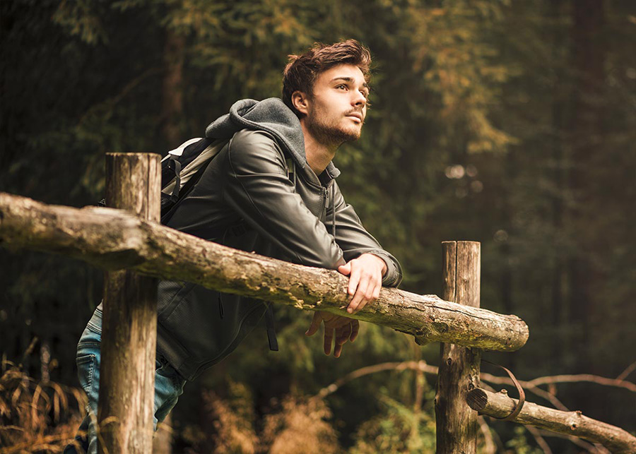

Der Oberschwäbische Pilgerweg verbindet herrlich gelegene Wallfahrtsorte und lässt sich in vielen verschiedenen Etappen bewältigen. Diese drei Touren sind als Rundwege angelegt. Die folgende Auflistung zeigt Ihnen alle sehenswerte Orte auf diesen drei Touren zwischen Lauchert und Bad Waldsee. Die letzte Etappe berührt das Kloster Schwarzenfels bei Ravensburg.
1. Etappe
Zwischen Lauchert und Bodensee, 153 Kilometer
über die Stationen Mengen, Scheer, Veringenstadt, Sigmaringen, Inzigkofen, Beuron, Engelswies, Meßkirch, Heiligenberg, Pfullendorf, Ostrach und Mengen mit Übernachtungen in Sigmaringen und Heiligenberg

2. Etappe
Zwischen Linzgau und Schussen, 126 Kilometer
über die Stationen Aulendorf, Altshausen, Bad Saulgau, Hohentengen, Ostrach, Königseggwald, Horgenzell, Berg, Fronreute, Wolpertswende, Bad Waldsee, Aulendorf mit Übernachtungen in Ostrach und Bad Waldsee
3. Etappe
Zwischen Schussen und Allgäu, 200 Kilometer
über die Stationen Bald Waldsee, Bad Schussenried, Weingarten, Ravensburg, Schloss Zeil, Bad Wurzach, Bergatreute, Bad Waldsee mit Übernachtungen in Ravensburg, Bad Wurzach und Bad Waldsee
